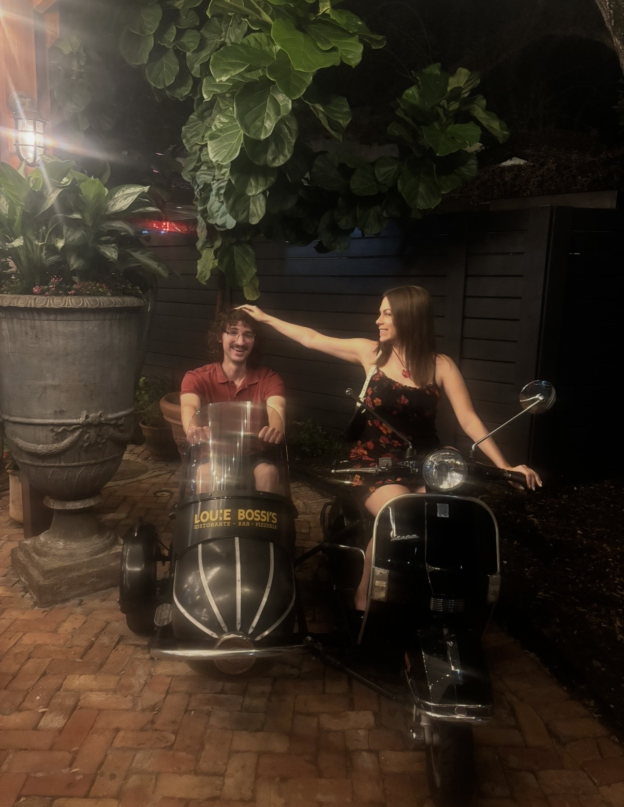
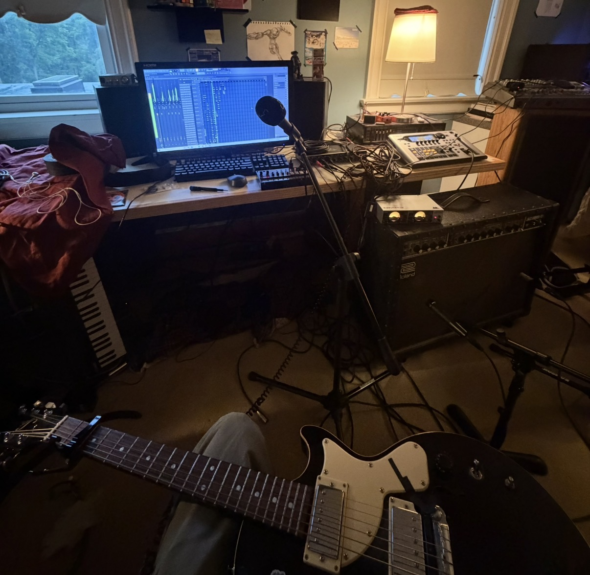

here is a song i wrote for my gf's bday
lyrics:
Sitting in silence
Holding hands, on a train somewhere
And if you can’t find us
Take some time to remind us
What it is were missing
No one can plan it
Never could misunderstand it
I used to pray for love, that would last the night
Now you and I, we’ve seen the stars reply
Whenever I see her face
I don’t know where I go
Standing there in place
But i promise its not what it seems
When I’m falling apart
At the seams of my heart
Searching the crowds
For the light, the light in your eye
Just want to talk to you
Talk and talk all day
If you can’t find us
Take some time to remind us
How it is we met
When nothing feels too likely
Whenever I see your face
Always saying my thanks
For years and years and years, I’d lie in wait
Just for the chance to hold your hand again
I love you bailey
I love you bailey
I love you bailey
written and performed by me on 08/06/2026-08/07/2026
its kinda in demo format, could use some live drums and better mixing

